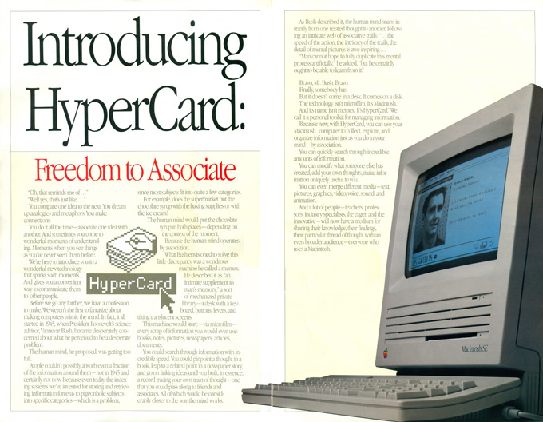

Interface Ideas
Interface Ideas
Interface Ideas
Interface Ideas
ZUSE Graphomat Z64
The ZUSE Graphomat Z64 was a flatbed drawing machine of high precision. Its engineer, famous computer pioneer Konrad Zuse, had originally intended it to be used for the production of maps and for land registration purposes.The Graphomat Z64 is a punch tape or punch card controlled plotter. This machine was presented in 1961 on the Hannove exhibition.
Early computer artists Georg Nees and Frieder Nake created their first computer art pieces on the Graphomat.
Frieder Nake, 13/9/65 Nr. 2 ("Hommage à Paul Klee")
The Z64 didn’t come with any software—someone needed to program it from scratch. Nake’s boss asked him if he could do it. “This short moment changed my life,” says Nake. In learning to program the Z64, he started to grasp the creative capabilities of computers—and thus began a long career as a computer artist and academic.
-Booting Up Computer Art
Georg Nees, Würfel-Unordnung (Cubic Disarray)

LOGO and Turtle Graphics
LOGO is an educational programming language, designed in 1967 by Daniel G. Bobrow, Wally Feurzeig, Seymour Papert and Cynthia Solomon. Today the language is remembered mainly for its use of turtle graphics, in which commands for movement and drawing produced line graphics either on screen or with a small robot called a turtle.
The first working Logo turtle robot was created in 1969. A display turtle preceded the physical floor turtle. Modern Logo has not changed too much from the basic concepts before the first turtle. The first turtle was a tethered floor roamer. At BBN Paul Wexelblat developed a turtle named Irving that had touch sensors and could move forwards, backwards, rotate, and ding its bell.
Try LOGO in the browser
1969 – The Logo Turtle – Seymour Papert
Aspen Movie Map
Aspen Movie Map
The Aspen Movie Map was a revolutionary hypermedia system developed at MIT by a team working with Andrew Lippman in 1978 with funding from ARPA.
Created in the late 1970’s, the Aspen Movie Map was a groundbreaking interactive virtual tour of the real-world city of Aspen, Colorado. Users could navigate the streets, go inside selected buildings, and change the seasons between fall and winter.
The Aspen Movie Map predated Google Street View by 34 Years
Inventing Interactive - Aspen Movie Map ArticleHypercard

HyperCard is an application program and programming tool for Apple Macintosh and Apple IIGS computers, that is among the first successful hypermedia systems before the World Wide Web. It combines database capabilities with a graphical, flexible, user-modifiable interface.
Hypermedia, a term derived from hypertext, extends the notion of the hypertext link to include links among any set of multimedia objects, including sound, motion video, and virtual reality. It can also connote a higher level of user/network interactivity than the interactivity already implicit in hypertext.
HyperCard is based on the concept of a "stack" of virtual "cards". Cards hold data, just as they would in a Rolodex card-filing device. Each card contains a number of interactive objects, including text fields, check boxes, buttons, and similar common GUI (Graphical user interface) elements. Users "browse" the stack by navigating from card to card, using built-in navigation features, a powerful search mechanism, or through user-created scripts.
Hypercard included a high level programming language called Hypertalk, which allowed users to add interactivity to their hypercard stacks
Hypercard influenced the creation of HTML and the modern internet
Hypermedia continued to evovle...
Macromind Video Works
Released in 1985, a publicly available linear animation software package that let users create interactive video tours, animations and more on personal computers.

Macromind Videoworks eventually became Macromedia Director, which became the leading authoring application for interactive media in the era of the multimedia CD-ROM